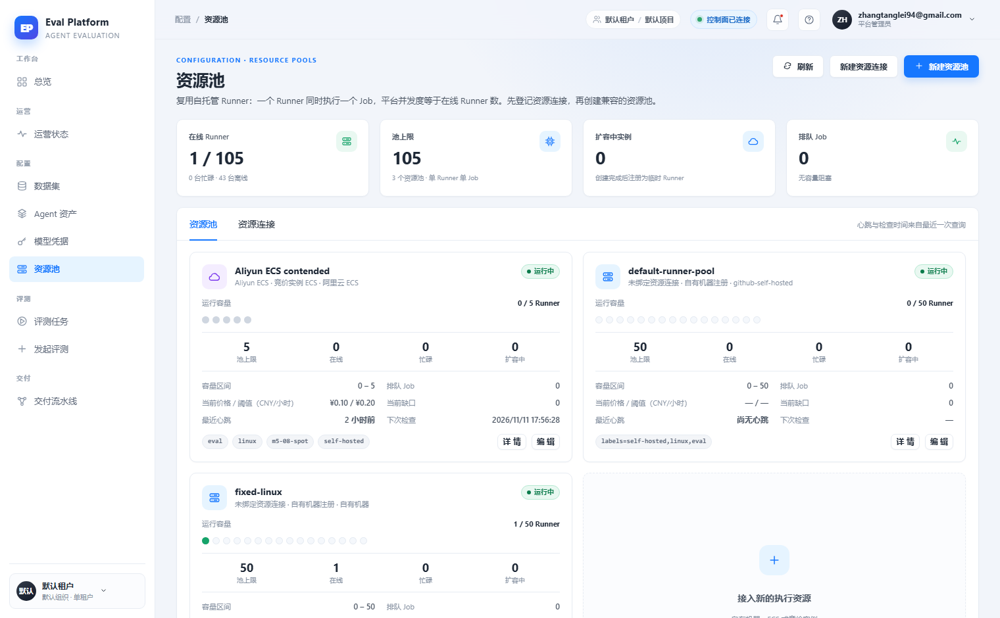
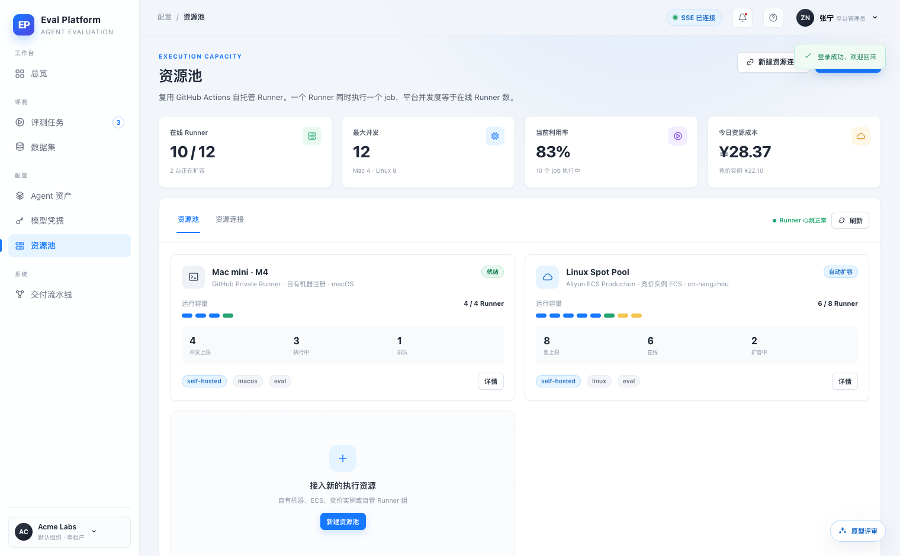
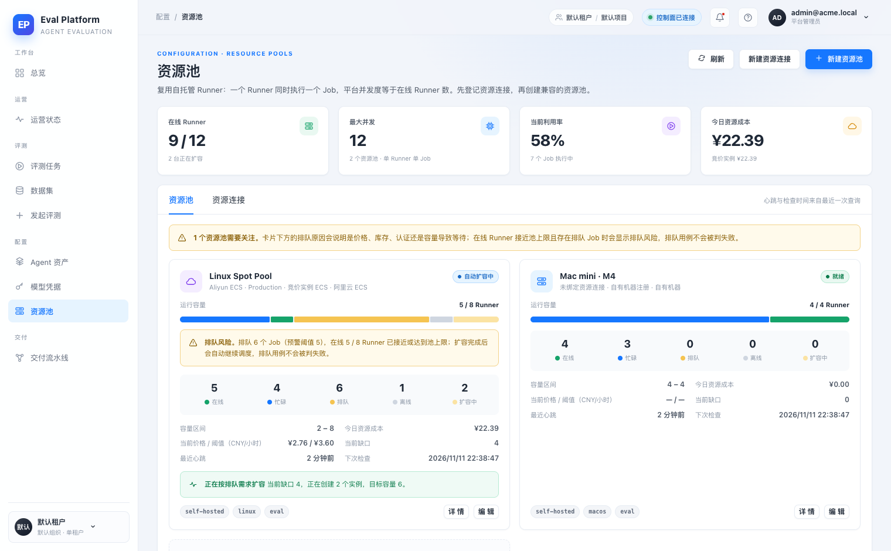
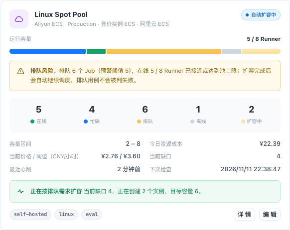
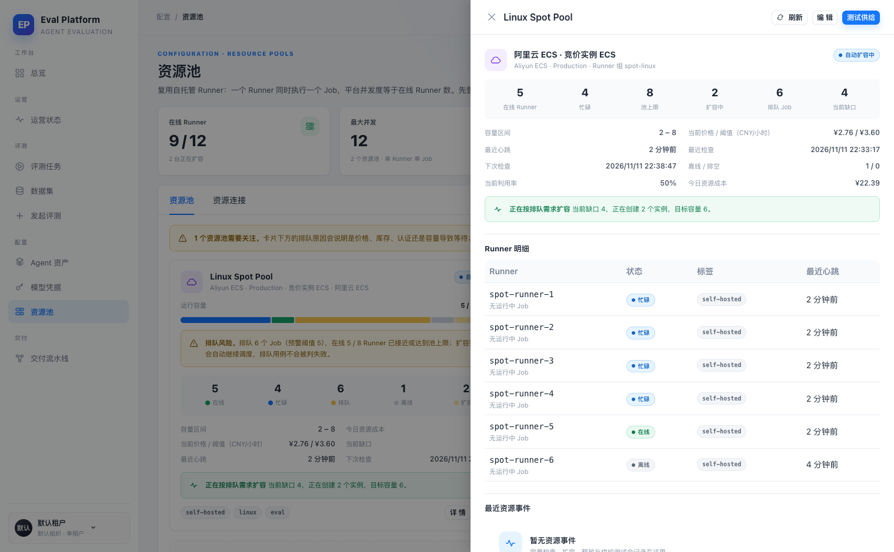
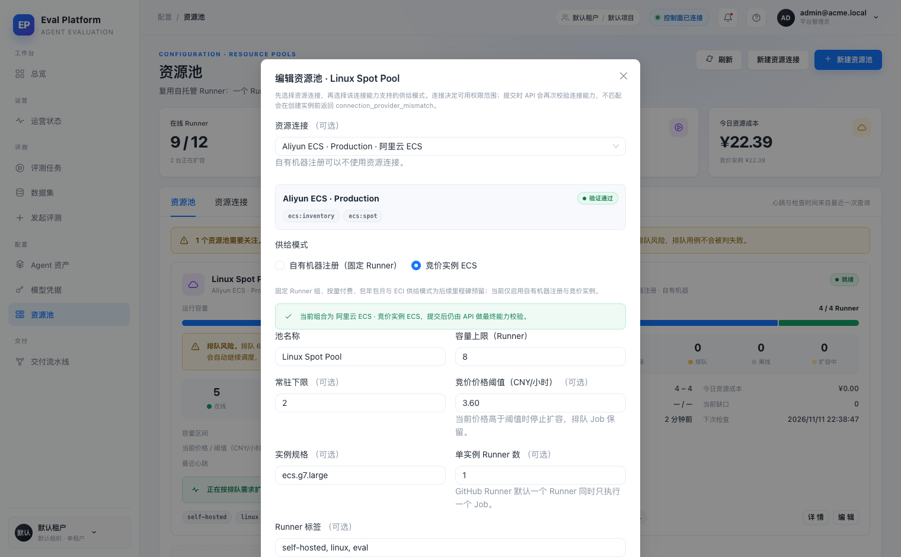
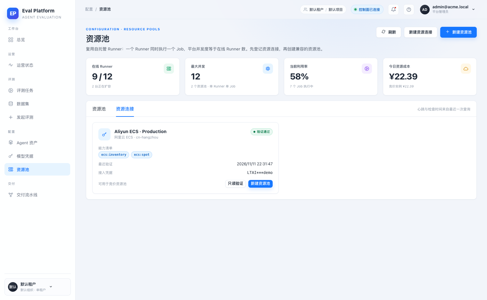
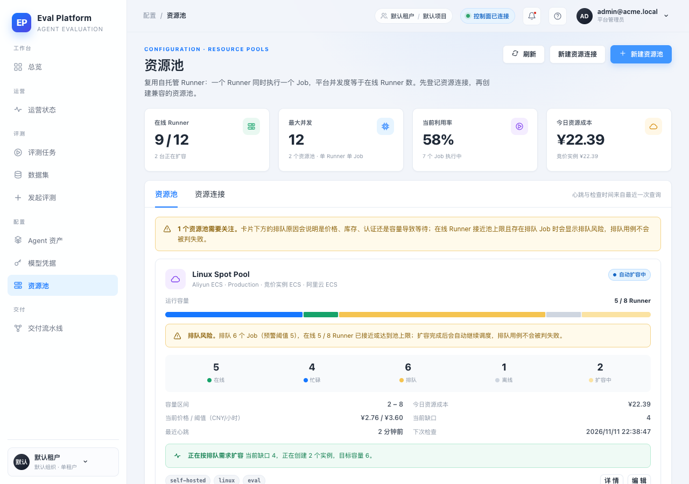

- 应用
- AI Eval Platform · 资源池页
- 提交
- 7a727ba（本 PR head）
- 栈
- 本地 FastAPI + SQLite + Vite dev server
- 浏览器
- Chrome headless · 1520×940（另测 1280×900）
- 数据
- 2 个资源池 · 9 个在线 Runner · 1 个离线 · 2 个扩容中 · 6 个排队 Attempt
- 计费口径
- CNY；实例运行时长 × 创建时 CNY/小时报价快照
- 供给器
- 本地演示用 Fake provisioner（不调用真实阿里云）
本地开发栈 · FastAPI + SQLite + Vite + Chrome headless
M5-19 资源池成本利用率与排队可视化 · 集成冒烟报告
在本地开发栈上验证 M5-19：资源池页恢复「当前利用率」与「今日资源成本」统计卡，容量条按在线/忙碌/排队/离线/扩容中分段并配同色统计，池状态区分就绪/自动扩容中，在线 Runner 接近上限且排队 Job 超过阈值时显示排队风险。12 个浏览器冒烟场景全部通过，无控制台错误与意外 4xx/5xx。
594 passed / 1 skipped后端测试
tsc + vite 通过前端构建
12 通过 · 0 失败冒烟场景
0缺陷
Environment and Artifact
2026-11-11 · AI Eval Platform · M5-19 · issue #147Scenario Matrix
12 pass| # | 场景 | 结果 | 说明 | 证据 |
|---|---|---|---|---|
| 01 | 登录页 | PASS | 登录页标题「把 Agent 能力， 变成可解释的工程指标。」 | 01-login.png |
| 02 | 统计卡 | PASS | 在线 Runner 9 / 12 2 台正在扩容 | 最大并发 12 2 个资源池 · 单 Runner 单 Job | 当前利用率 58% 7 个 Job 执行中 | 今日资源成本 ¥22.39 竞价实例 ¥22.39 | after-01-resources.png |
| 03 | 资源池卡片与状态 | PASS | Linux=true, Mac=true | after-01-resources.png |
| 04 | 容量分段与图例 | PASS | aria: 资源池容量构成：忙碌 4，在线 1，排队 6，离线 1，扩容中 2 · stats: 5 在线 | 4 忙碌 | 6 排队 | 1 离线 | 2 扩容中 | after-01-resources.png |
| 05 | 排队风险预警 | PASS | Linux 排队 6 / 阈值 5 显示预警；Mac 无预警 | after-02-queue-risk.png |
| 06 | 利用率与成本可复算 | PASS | 利用率 58%，今日成本 ¥22.39 = Linux 池 ¥22.39 | after-01-resources.png |
| 07 | 详情抽屉 | PASS | 详情含 Runner 明细、资源事件与池配置 | 04-detail-drawer.png |
| 08 | 编辑入口 | PASS | 编辑弹窗可打开并取消 | 05-edit-modal.png |
| 09 | 资源连接页签 | PASS | 资源连接卡片存在且状态为验证通过 | 06-connections.png |
| 10 | 刷新与稳定性 | PASS | 刷新后无页面异常 | after-01-resources.png |
| 11 | 1280 视口 | PASS | 无横向溢出（overflow=0px） | after-03-resources-1280.png |
| 12 | 网络与控制台 | PASS | auth/me 探测 2 次（预期）；其他 4xx/5xx 0 次；控制台错误 0 次 | — |
Issues and Observations
No defects foundNo defects were found.
Evidence
8 screenshots







Automated Coverage Assessment
3 areas reviewed| 区域 | 覆盖 | 结论 | 建议 |
|---|---|---|---|
Conclusion
可交付12 个冒烟场景全部通过，后端与前端门禁通过，未发现需修复的集成问题。
- 利用率 = 忙碌 Runner / 池上限；今日成本 = 实例运行时长 × 创建时 CNY/小时快照。
- 本地演示使用 Fake provisioner；真实竞价报价由线上 spot-smoke 验证。
M5-19 · issue #147 · 证据由本地开发栈浏览器冒烟生成，截图不写入代码仓。